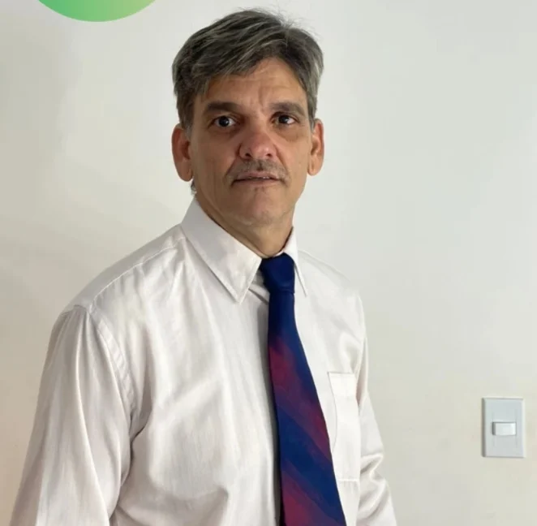

DESTAQUE
Gestão de NR-1
Apoio à organização da gestão de riscos ocupacionais e das medidas de prevenção no ambiente de trabalho.
Conhecer soluçãoATENDIMENTO EM TODO O BRASIL
Atuação especializada em Segurança do Trabalho, gestão de NR-1, elaboração de PGR e desenvolvimento de pessoas para ambientes profissionais mais seguros e saudáveis.

QUEM ESTÁ POR TRÁS
Sou Rinaldo Faria, técnico em Nutrição, biomédico, gestor de NR-1 e especialista em Segurança do Trabalho.
Minha atuação como especialista em Segurança do Trabalho integra saúde, segurança ocupacional e gestão de pessoas, oferecendo apoio a empresas e indivíduos que buscam cuidar do bem-estar e desenvolver ambientes de trabalho mais seguros.
Com uma abordagem voltada à prevenção e ao acolhimento, trabalho com gestão de riscos, treinamentos e acompanhamento de demandas de saúde ocupacional.
Conheça meu trabalho no InstagramSOLUÇÕES INTEGRADAS
Atendimento direcionado a empresas e pessoas, de acordo com as necessidades de cada cliente.
Apoio à organização da gestão de riscos ocupacionais e das medidas de prevenção no ambiente de trabalho.
Conhecer soluçãoElaboração e organização do Programa de Gerenciamento de Riscos, conforme o escopo aplicável à empresa.
Conhecer soluçãoApoio ao desenvolvimento de equipes, relações profissionais e práticas de cuidado no ambiente de trabalho.
Solicitar informaçõesOrientações e capacitações voltadas à prevenção, segurança, conscientização e desenvolvimento profissional.
Solicitar informaçõesOrientação sobre equipamentos de proteção individual e práticas de utilização no contexto ocupacional.
Solicitar informaçõesApoio na organização do Atestado de Saúde Ocupacional, com encaminhamento a profissionais habilitados.
Solicitar informaçõesApoio e articulação de avaliações psicossociais com profissionais habilitados, conforme a demanda.
Solicitar informaçõesAcolhimento e orientação focados no bem-estar e no cuidado individual, respeitando a necessidade de cada pessoa.
Solicitar informaçõesPREVENÇÃO E SEGURANÇA OCUPACIONAL
Estruture a gestão de riscos de forma organizada, com atenção às características da sua empresa, às atividades desenvolvidas e às pessoas que fazem parte dela.
Converse sobre sua empresaConhecer a realidade da organização e alinhar o escopo do trabalho.
Apoiar a identificação de riscos e a definição de medidas preventivas.
Estruturar a documentação de gerenciamento de riscos conforme o escopo aplicável.
Integrar orientações, treinamentos e encaminhamentos, quando necessários.
ATENDIMENTO PERSONALIZADO
Para organizações que buscam apoio na gestão de riscos, nos processos de saúde ocupacional e no desenvolvimento de equipes.
Falar sobre minha empresaPara quem valoriza orientação, acolhimento e atendimento voltado ao bem-estar e ao desenvolvimento pessoal.
Falar sobre atendimentoVAMOS CONVERSAR
Entre em contato pelo Instagram para conversar sobre suas necessidades e conhecer as possibilidades de atendimento.
Atendimento em todo o Brasil